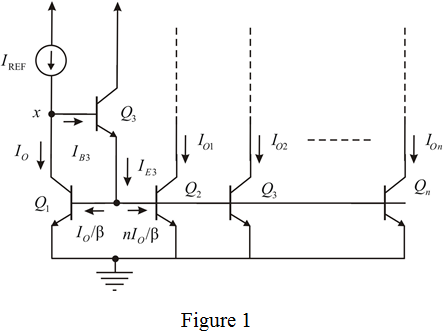
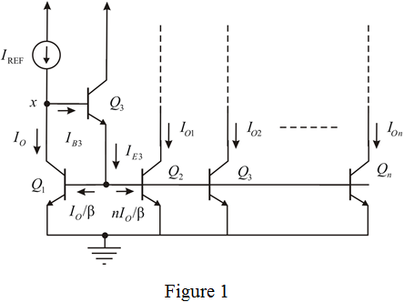
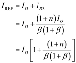

Refer to Figure 7.33 in the textbook for the current mirror circuit.
The extended current mirror circuit with  outputs is shown in Figure 1.
outputs is shown in Figure 1.

Refer to Figure 7.33 in the textbook for the current mirror circuit.
The extended current mirror circuit with outputs is shown in Figure 1.

From the Figure 1, observe that the transistors pairs , , , …, and acts as current mirror networks whose collector current is equal to  .
.
Apply Kirchhoff’s current law at emitter node of transistor,  .
.
The relation between base current and emitter current of transistor,  is,
is,
Substitute for  .
.
Apply Kirchhoff’s current law at node,  .
.

Hence, the resulting current transfer ratio from the input to each output is, .
The reference current is,
Choose currents when a deviation of from the unity.
Recall the current transfer ratio expression.
Substitute 100 for  , 0.999 A for , and 1 A for to calculate the value of
, 0.999 A for , and 1 A for to calculate the value of  .
.
Therefore, the maximum possible number of outputs, for BJTs is,  .
.